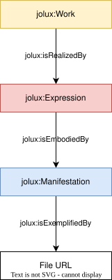

Tutorial
This tutorial guides through the basics of the JOLux ontology using the federal constitution as an example.
URI
The URI of the federal constitution is https://fedlex.data.admin.ch/eli/oc/1999/404. This URI has some important information encoded:
the part
fedlex.data.admin.chis the namespace for all federal legislative information./elistands for European Legislation Identifier and is a effort to make legislation meta data available in a standardized format.the part
/ocdenotes the Official Compilation, meaning that this URI identifies something that is part of the official compilation of the federal law. The official compilation basically is the sum of the law./1999is the year of the publication./404is some random identifier that has no specific meaning (there is some irony in the federal constitutions having HTTP 404 error as identifier).
This URI can be found on the website of Fedlex through a search. If this URI is put into a webbrowser, there is a redirection to https://www.fedlex.admin.ch/eli/oc/1999/404 but this is not the URI of the federal constitution but a website presenting the constitution with some additional meta data.
Work, Expression, Manifestation
Let’s examine the classes of the constitutions URI through the following SPARQL query:
SELECT DISTINCT * WHERE {
<https://fedlex.data.admin.ch/eli/oc/1999/404> a ?class.
}
The result shows, that the constitution is something of type jolux:Work (besides others). A jolux:Work is basically the abstract representation of a law text. Is there a connection to an jolux:Expression? Let’s find out:
PREFIX jolux: <http://data.legilux.public.lu/resource/ontology/jolux#>
SELECT DISTINCT * WHERE {
<https://fedlex.data.admin.ch/eli/oc/1999/404> ?p ?o.
?o a jolux:Expression.
}
So there are three jolux:Expressions connected via jolux:isRealizedBy:
https://fedlex.data.admin.ch/eli/oc/1999/404/dehttps://fedlex.data.admin.ch/eli/oc/1999/404/frhttps://fedlex.data.admin.ch/eli/oc/1999/404/it
So, a jolux:Expression is a language specific representation of a jolux:Work. The connection to the jolux:Manifestation for one expression is queried now:
PREFIX jolux: <http://data.legilux.public.lu/resource/ontology/jolux#>
SELECT DISTINCT * WHERE {
<https://fedlex.data.admin.ch/eli/oc/1999/404/de> ?p ?o.
?o a jolux:Manifestation.
}
resulting in three jolux:Manifestations connected via jolux:isEmbodiedBy:
https://fedlex.data.admin.ch/eli/oc/1999/404/de/dochttps://fedlex.data.admin.ch/eli/oc/1999/404/de/pdf-ahttps://fedlex.data.admin.ch/eli/oc/1999/404/de/pdf-x
This means that a jolux:Manifestation is a language and file format specific representation of a jolux:Work. If one wants to get e.g. the PDF document of the federal constitution in German, the following query helps:
PREFIX jolux: <http://data.legilux.public.lu/resource/ontology/jolux#>
SELECT DISTINCT ?url WHERE {
<https://fedlex.data.admin.ch/eli/oc/1999/404> jolux:isRealizedBy ?expression.
?expression jolux:language <http://publications.europa.eu/resource/authority/language/DEU>;
jolux:isEmbodiedBy ?manifestation.
?manifestation jolux:userFormat <https://fedlex.data.admin.ch/vocabulary/user-format/pdf-a>;
jolux:isExemplifiedBy ?url.
}
So, the general connection between Work, Expression and Manifestation is shown in the following image:
